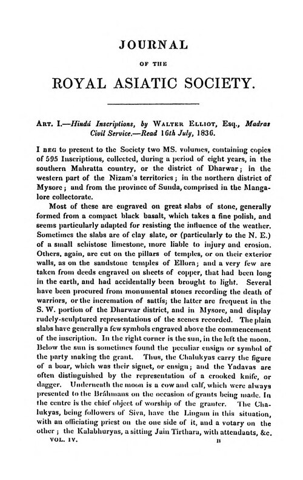

🏮 同里古镇（苏州吴江）
方案③古镇夜市 · 摇橹船夜游
距亚朵8km摇橹船灯会

实景照片 · 来源 Wikimedia Commons（CC协议）
← 返回主计划
位置与交通
- 位置：苏州市吴江区同里镇
- 距苏州湾亚朵：约 8km / 15–20分钟
价格参考（1.27m女童按儿童票）
| 项目 | 价格 | 说明 |
|---|
| 门票 成人 | 约100元 | 含主要园林 |
| 门票 儿童(1.2–1.5m) | 约半票50元 | 女童适用 |
| 摇橹船 | 约120–200元 | 按船计价 |
白天门票+船约 320–500元/家（见主计划预算）。
特点与适合谁
- 江南水乡，园林+摇橹船夜游+灯会，爸爸古镇夜市主场。
- 女童爱坐船游河。
- 夜游比白天人少些。
注意事项
国庆10/1–10/3人流大，建议夜游或错峰；河岸看护女童。